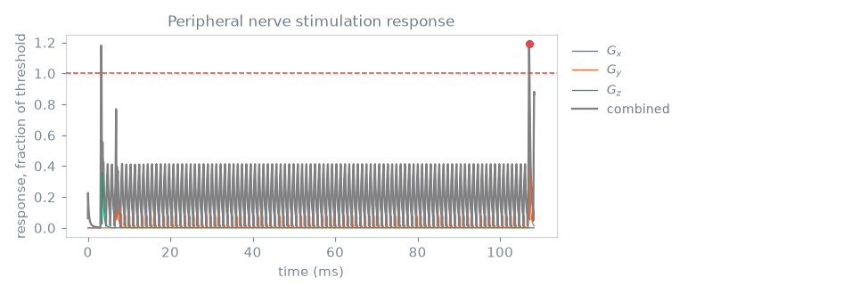
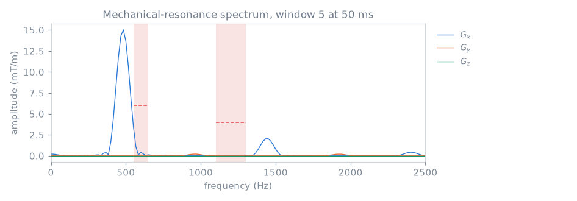

Note
Go to the end to download the full example code.
Sequence constraint checks#
The earlier lessons checked the timing of each sequence as it was built. This lesson runs every check the package computes over a finished sequence, and reads what each of them reports: the measured quantity, the limit it is compared with, and the part of the sequence the measurement comes from.
The checks are run on the shipped single-shot echo planar acquisition, 2D echo-planar imaging, of the kind built by hand in Single-shot echo planar. Its readout reaches high slew rates in a periodic pattern, so the gradient, stimulation and resonance checks all report non-trivial values.
A passing check does not establish that a sequence is safe to run on a scanner or on a subject. The PNS, mechanical-resonance and SAR models used here are synthetic demonstrations. Scanner-specific checks and hardware monitoring are separate. The physical models are described in Gradient, PNS and SAR constraints.
Learning objectives#
After this lesson, you should be able to:
run the timing, gradient amplitude, slew-rate and boundary-continuity checks, and distinguish per-axis from vector readings;
compute a peripheral nerve stimulation response with a chronaxie model and inspect its trace;
compare the gradient spectrum with forbidden mechanical-resonance bands;
compute SAR over averaging windows with a set of virtual observation points;
identify the design parameters that change a failing reading.
Echo-planar test sequence#
A single-shot echo-planar readout provides high slew rates and a periodic gradient waveform, making both PNS and mechanical-resonance diagnostics informative.
from pypulseqpp import safety
from pypulseqpp.sequences import epi2D_sequence
seq = epi2D_sequence(n_x=96, n_y=96, n_slices=1, n_shots=1, n_dummy=0)
print(f"{seq.num_blocks} blocks, {seq.duration()[0] * 1e3:.1f} ms")
104 blocks, 108.3 ms
Timing and gradient hardware#
check_timing verifies raster alignment, dead times and event placement.
The amplitude and slew checks compare the waveform after each block’s rotation
with the system limits the sequence was designed under. They report the largest
per-axis reading and the largest vector reading, which is not the norm of the
per-axis peaks: two axes reach their own peaks at different times.
The verdict uses the per-axis reading, because the hardware limits apply per
axis; the vector reading is reported beside it. check_grad_continuity looks for
discontinuities between adjacent blocks. A discontinuity corresponds to an
undefined instantaneous slew in the Pulseq waveform.
timing_ok, timing_errors = seq.check_timing()
grad_ok, grad = safety.check_max_grad(seq)
slew_ok, slew = safety.check_max_slew(seq)
cont_ok, cont = safety.check_grad_continuity(seq)
print(
f"limit {grad.limit / seq.system.gamma * 1e3:.0f} mT/m per axis; "
f"largest {grad.per_axis.value / seq.system.gamma * 1e3:.1f} mT/m on "
f"{grad.per_axis.axis}, vector {grad.vector.value / seq.system.gamma * 1e3:.1f} mT/m"
)
limit 40 mT/m per axis; largest 39.8 mT/m on x, vector 44.1 mT/m
Peripheral nerve stimulation#
A changing gradient induces an electric field in the subject, and the nerve model converts the slew on each axis into a response as a fraction of the threshold at which stimulation is reported. The axes are combined as a root sum of squares, and the check passes while that stays below one.
The chronaxie model below takes its three coefficients from the
strength-duration relationship; a scanner supplies a SAFE model instead,
which read_safe_model() reads from an .asc file.
model = safety.ChronaxieModel(chronaxie=334e-6, rheobase=23.4, alpha=0.333)
pns_ok, pns = safety.check_pns(seq, model, trace=True)
print(
f"peak {pns.peak.value:.2f} of threshold at {pns.peak.time * 1e3:.1f} ms, "
f"in block {pns.peak.block}"
)
print("per axis:", ", ".join(f"{axis.axis} {axis.value:.2f}" for axis in pns.axes))
peak 1.19 of threshold at 107.1 ms, in block 103
per axis: x 1.06, y 0.76, z 1.04
trace=True returns the response the peak was taken from, so a diagram of
it is the check’s own calculation rather than a second one.

Mechanical resonance#
Gradient-coil mechanical modes define forbidden frequency bands and amplitude tolerances. The check computes the gradient spectrum in overlapping windows and reports the largest amplitude within each band.
bands = [
safety.ForbiddenBand(axis=None, f_min=550.0, f_max=650.0, tolerance=6.0),
safety.ForbiddenBand(axis="y", f_min=1100.0, f_max=1300.0, tolerance=4.0),
]
mech_ok, mech = safety.check_mech_resonance(seq, bands, window_width=20e-3)
for band in mech.bands:
print(
f"{band.f_min:6.0f}-{band.f_max:6.0f} Hz on {band.axis or 'every axis':10}: "
f"{band.peak:5.2f} mT/m at {band.frequency:6.0f} Hz "
f"against {band.threshold:4.1f}, {band.violations} windows over"
)
550- 650 Hz on every axis: 3.53 mT/m at 550 Hz against 6.0, 0 windows over
1100- 1300 Hz on y : 0.72 mT/m at 1100 Hz against 4.0, 0 windows over
mech_resonance_spectrum returns one window’s spectrum through the same
windowed pass, so the figure and the verdict use the same numbers. The
readout train is periodic, so its spectrum is a comb at the echo-spacing
frequency and its harmonics.
spectrum = safety.mech_resonance_spectrum(
seq, window=mech.bands[0].window, window_width=20e-3
)

Specific absorption rate#
The SAR check integrates the power a transmit array deposits over the
sequence’s own repeating unit, against a set of virtual observation points.
example_vops() returns a synthetic model with a
circularly polarised shim: it is shaped like a real one and its numbers mean
nothing about any coil or any subject. A scanner’s model is read from a file
with read_vops().
demonstration = safety.example_vops()
sar_ok, sar = safety.check_sar(
seq,
demonstration.model,
drive_per_hz=demonstration.drive_per_hz,
default_shim=demonstration.cp_shim,
)
print(f"{len(sar.windows.first)} windows over a {sar.tr_size}-block repeating unit")
print(
f"worst local {sar.worst_local.sar:.2f} W/kg against {sar.local_limit} W/kg, "
f"worst global {sar.worst_global.sar:.2f} W/kg against {sar.global_limit} W/kg"
)
1 windows over a 104-block repeating unit
worst local 0.39 W/kg against 10.0 W/kg, worst global 0.21 W/kg against 3.2 W/kg
Every verdict together#
check result reading
event timing pass 0 errors
gradient amplitude pass 39.8 mT/m
slew rate pass 166 T/m/s
gradient continuity pass 0 discontinuities
peripheral nerve stimulation FAIL 1.19 of threshold
mechanical resonance pass 0 windows over
specific absorption rate pass 0.39 W/kg local
This short-echo-spacing echo-planar train exceeds the demonstration nerve model’s threshold. Lengthening the echo spacing, reducing the echo-train length or lowering the prescribed slew limit changes the response. These design parameters are compared in the echo-planar imaging example.
Total running time of the script: (0 minutes 0.305 seconds)